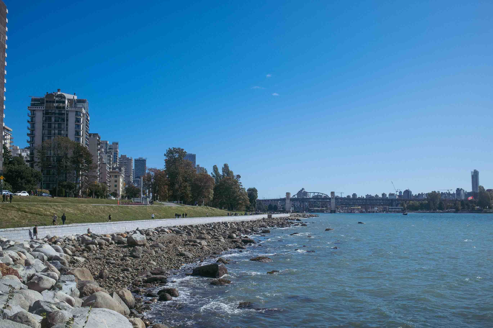

In what is fortunately becoming a revolving door of friends and family visiting me from Edmonton (and across the country), it's been a little easier to adjust to life here in Vancouver. I'll admit, there are days that I do feel a little lonely and miss my friends back home, but this week, my Mom came to spend some time with me. It's amazing to think of how much has changed in such a short time. We went to the noodle house that we dined at the last time I was here. But the last time we ate there, I was a tourist, here to explore, dine out, and take a break from my life in Edmonton. Now, I'm the one taking my Mom out, and she's one visiting me.
Of course, no visit from someone from home would be complete if I didn't take them to Gastown (and more specifically, Guilt and Co). At least this time, I remembered to set my ISO setting on my camera manually so it didn't default to 12800 ISO for every picture. I've been really liking the direct, party flash style of photography lately. So this time, instead of using the on camera flash built into the X100, I brought it out with my Godox Lux Senior flash, to really complete my look at a ancient geezer with a vintage camera. With the flash placed a little higher on the camera, it really takes some beautiful pictures that don't have the red eye issues that come with using the built in flash. I think it doesn't work as well for full length pictures (see below) as the flash doesn't have the best range, and it loses the advantage of it's relatively large round beauty dish, but overall I'm pretty happy with these images!
Jeff was in town last week for a wedding so we had a chance to catch up. We went to check out this really cool restaurant called Bar Tartar in Gastown. The idea behind this spot is that they have rotating chefs that come in and create feature menus for a limited time. This time around, Jeff treated me to some pork, hand made pasta noodles, and vegetables. They were small tapas, but really tasty. Honestly it was pretty expensive, but definitely worth the experience if you are a food lover.
Afterwards, we went to Guilt and Co again (which is quickly becoming one of my favorite spots here in the city). I spilled a beer all over Jeff while trying to get a piece of beef jerky, so that was one way to start the experience. Later on in the night, we walked down Granville St and as is tradition for my blog, got a pizza from Firecrust before heading home. I also learned that my Fuji X100 camera really likes to default to 12800 ISO when set on automatic, even when using the built in flash, so that was a lesson learned to manually set that as these photos look pretty rough!

Because Kat is in town, we took a trip down to the beach for a walk and a quick bite to eat. It's a shame I haven't been down here more, as I actually live really close to the beach. Life's been kinda busy with school and work, but I really should make an effort to get down there more. Our first stop was to go to Craft for a round of drinks and more pizza. To our pleasant surprise, Craft has happy hour all day on Sunday! Cheap eats and drinks are a necessity while I'm school so I may need to come back here often.


Next we went down to the beach for a walk. While it was sunny, it was actually pretty cold. But it wasn't hard to be inspired to take some street photography here. As I mentioned before, I've been really busy and haven't had a lot of time to actually get out here and be creative with my camera. I hope to change that soon, as I'm starting to get more comfortable being a here in my new home. Stay tuned for more!


Finally! The first long weekend since the start of school! Kat joined me in Vancouver from Edmonton over the weekend, and I finally got a day off of work to enjoy the city a little. We started off with some shopping over in Richmond, and I picked up a Super Puff jacket that is rated up to -30°C. Hopefully I won't be needing that here, but so far it's actually been a little colder here then it has been back in Edmonton. I guess in Vancouver, the temperature is more moderate throughout the whole year unlike the big swing from hot to cold back at home. Mid way through our shopping we stopped by Japadog to try some of their hot dogs. I had actually walked by this restaurant multiple times in the past and always wanted to try it. It was a good snack, and gets a recommenation from me!


After shopping we decided to do something a little more unique and headed by train down to Gastown for some live music and dinner. We managed to get to the restaurant before the end of happy hour, so we got a round of tacos and a mushroom pizza, along with a couple pints of local beer. Ryland Moranz played a set while we ate dinner, who is from Alberta! After dinner, it was back home to drop off our shopping and we ended up just crashing for the night.